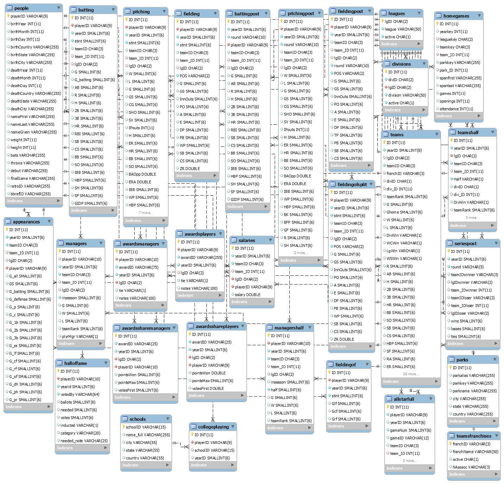
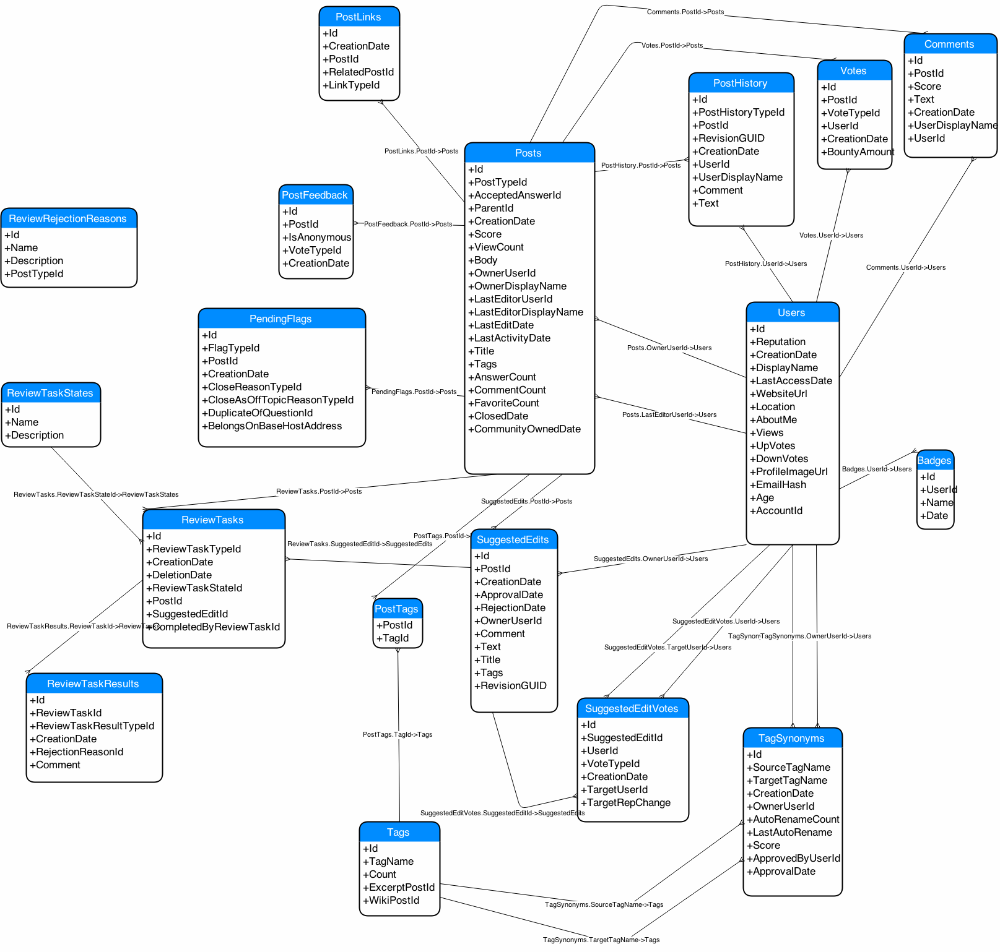

class: center, middle # Relational Databases ### Duncan Temple Lang <div style="clear: both"/> <!-- <hr width="50%"/> --> --- # Goals + Understand essential ideas of Relational Databases + Be able to interact with Relational database to get data from it. + Essentials of Structured Query Language - SQL + Perform computations in the database and then process the results in R. + Be able to read and write SQL code and understand what it is doing. + Understand when using a database is a good idea. --- # *Relational* Database Management Systems - DBMS + Widely used in industry, academia + Data repository/storage for an institution, company, project, etc. + Often multiple databases for different purposes. + Each database is many inter-connected tables containing data for different *entities* + e.g., student, faculty, course, ... + Live data + applications updating the data + others querying it and seeing new, changed data --- # Relationships between 2 or more tables + connects records across tables + allows us to *merge* rows in tables + 1 to 1 + 1 to many + many to 1 + many to many --- # Efficient, Large Data + Databases capable of handling very large data + Efficient computational model to query and combine data + Efficient storage + Minimize redundancies of repeating the same value. + Only stores and provides data + Limited additional computations can be done in database. + Need to bring subset of the data back to the client to do application specific analysis. --- # Client-Server + Many (most) databases use a client-server model + Single centralized database running on a machine. + Many client applications (e.g., Excel, R, SAS, Python, Web browser) can simultaneously query the database. + From many different machines. + Updating of data done centrally. + Only need to update in a single place. + Next time an application queries the DBMS, get the new, updated data. + All applications need to "wait" to ensure getting correct data. + blocked until data is synchronized. + Database handles many "simultaneous" transactions + synchronize updates of data and queries of current data. --- # Key Concepts + One database made up of one or more tables. + Merge records/rows across one or more tables to create new tables/*views*. --- # Tabular Data + A database is made up of multiple related tables + Each table is rectangular + has rows and columns + like a data frame in R + rows/observations are called tuples + columns are called attributes + Order of the rows should/does not matter. --- <p></p> Original https://github.com/WebucatorTraining/lahman-baseball-mysql/blob/master/lahman-model.png --- <p></p> --- # Schema + Each table created with a SCHEMA + Specifies the structure of the table + Columns and their types + Columns have specified types + TEXT/VARCHAR, INTEGER, REAL, BOOL, BINARY, BLOB + Indicator for whether NA/NULL values are allowed + Constraints on whether values in a column must be unique + often the **key** to uniquely identify an entity + can also be combination of values from several columns to make unique **key** + like rownames in a data.frame + Also if values in a column are automatically generated and auto-incremented. --- # Schema + Relationships between records in 2 or more tables. + Value(s) in one record identifies record in other table. + e.g. student id in a table for a course maps to a Student Information table. + Constraints on values for a given column + e.g., Must be unique + Must correspond to an actual value in a column in another table. --- # Interactive SQLite sqlite3 cookies3.sqlite